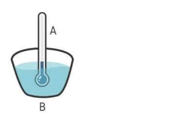
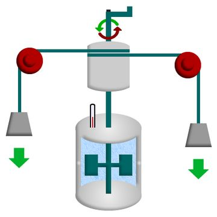
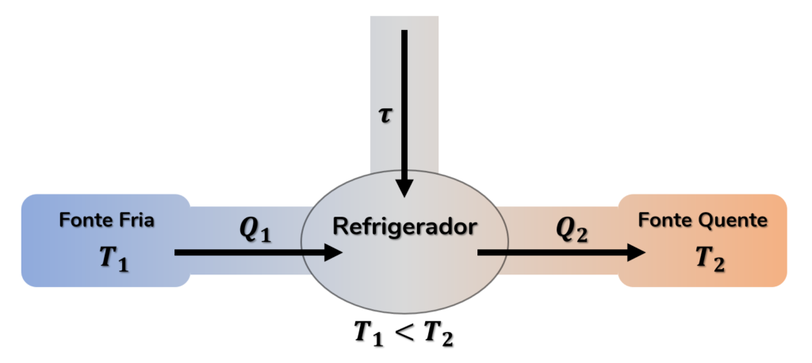
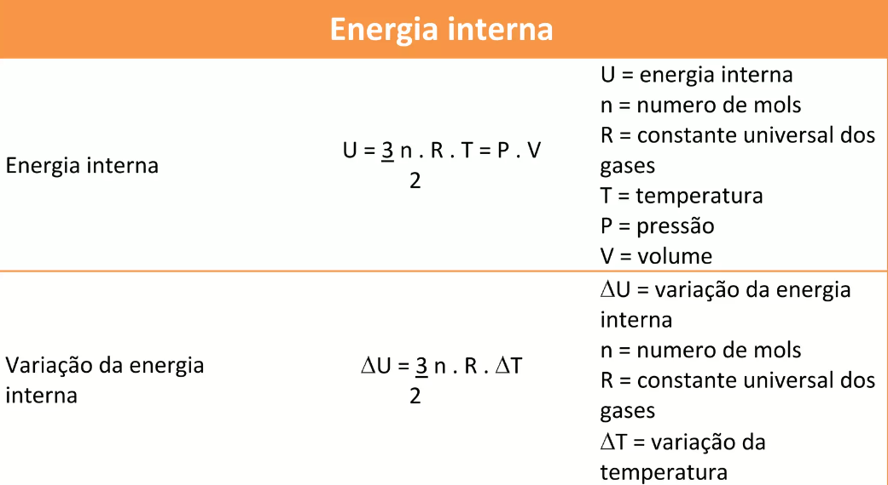
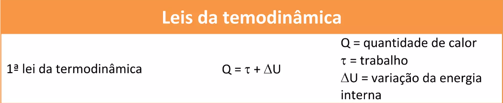
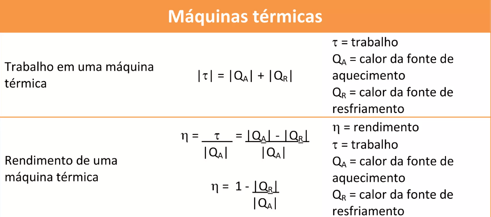

Introdução à Termodinâmica
A Termodinâmica foi criada em 1650, por Otto Von Guericke (1602-1686), um físico alemão notabilizado pelo estudo do vácuo e da eletrostática, e podemos dizer que é o estudo das leis que regem as relações entre calor, trabalho e temperatura, bem como as transformações sofridas pela energia. A termodinâmica estuda o intercâmbio de energia entre sistemas macroscópicos, formados por um grande número de partículas, como os gases, fluidos e sólidos, recorrendo à análise de importantes grandezas físicas, como pressão, volume e temperatura. Uma das ideias centrais da termodinâmica é a relação entre calor e trabalho mecânico: a partir dessa relação foi possível que construíssemos máquinas térmicas cada vez mais eficientes e úteis, como a máquina a vapor e os motores de combustão interna.
Leis da Termodinâmica
Existem quatro Leis da Termodinâmica: Lei Zero (associada ao conceito de temperatura), Primeira Lei (relacionada ao conceito de energia), Segunda Lei (associada ao conceito de entropia) e a Terceira Lei (relacionada ao limite constante da entropia quando a temperatura Kelvin se aproxima de zero):
De acordo com a Lei Zero da Termodinâmica, “dois corpos em equilíbrio com um terceiro, ou seja possuem a mesma temperatura, estão em equilíbrio térmico entre si”.
A Primeira Lei da Termodinâmica é, então, uma Lei da Conservação da Energia, podendo ser enunciado: A variação da Energia interna ΔU de um sistema é expressa por meio da diferença entre a quantidade de calor Q trocada com o meio ambiente e o trabalho W realizado durante a transformação. Se o calor trocado com o meio for maior do que 0, o sistema recebe calor. Se o calor trocado com o meio for menor do que 0, o sistema perde calor. Se não há troca de calor com o meio, ou seja, se ele é igual a 0, o sistema não recebe nem perde calor.

Ja a Segunda Lei da Termodinâmica diz que: “O calor não pode fluir, de forma espontânea, de um corpo de temperatura menor, para um outro corpo de temperatura mais alta.”

Por fim, a Terceira Lei da Termodinâmica apresenta que: toda vez que um sistema estiver próximo do zero absoluto (“0” na escala Kelvin e “-273.75” em graus Celsius) a entropia dele será constante ou igual a zero.

Fórmulas da Termodinâmica
Para a execução correta da Teoria da Termodinâmica, é preciso que as fórmulas referentes a cada lei sejam aprendidas e compreendidas, para uma precisão exata de cálculo. Sendo assim, para sua total compreensão veja a tabela a seguir:


